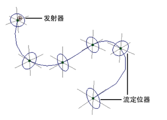
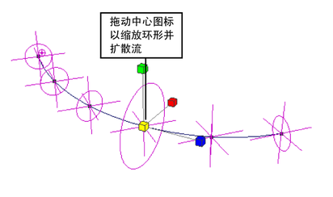
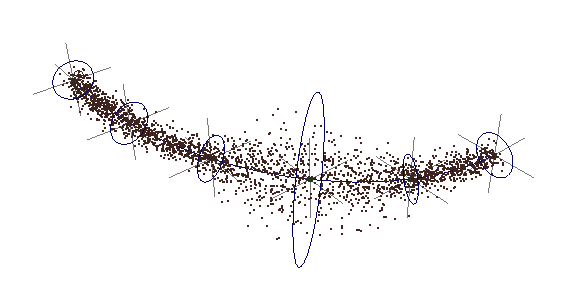
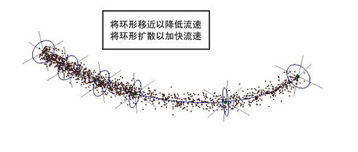
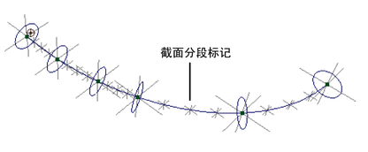
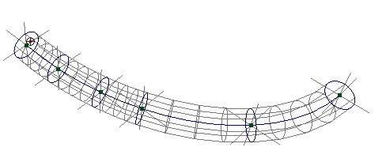

使用曲线流效果
- 选择曲线。
- 选择 >
 。
。 - 在“创建流效果选项”(Create Flow Effect Options)窗口中设置属性（请参见编辑曲线流效果的属性），然后单击“创建”(Create)。 
发射器和流定位器显示在曲线上。流定位器是用于显示粒子在动画期间的最大扩散范围的可视化辅助工具。有关更改粒子速度和扩散的详细信息，请参见使用流定位器。
- 播放动画。
发射粒子沿曲线流动。可以移动曲线或其 CV 以更改流向。
- 选择发射粒子，并使用“属性编辑器”(Attribute Editor)选择所需的渲染类型、颜色、不透明度、寿命等。
- 通过软件或硬件渲染功能渲染场景，具体随粒子的渲染类型而定。
编辑曲线流效果的属性
选择 >  时，以下属性显示在“创建火效果选项”(Create Fire Effect Options)窗口中。使用曲线流效果之后，可以通过属性编辑器编辑许多属性。例外情况记录在文本中。
时，以下属性显示在“创建火效果选项”(Create Fire Effect Options)窗口中。使用曲线流效果之后，可以通过属性编辑器编辑许多属性。例外情况记录在文本中。
若要在“属性编辑器”(Attribute Editor)中显示属性，请首先在“大纲视图”(Outliner)或工作区中选择曲线流节点（请参见下面的“曲线流组名称”部分）。若要在工作区中选择曲线流节点，请选择第一个流定位器附近的选择控制柄。
如果您两次或多次在同一曲线上使用曲线流效果，则会在第一个流定位器附近看到多个选择控制柄。
使用流定位器
流定位器可以控制流在曲线不同部分的速度和直径。可以缩放流定位器环形来展开或收缩该区域的流直径。可以沿曲线移动环形以加快或减慢该区域中流的速度。这在模拟流体在不均匀曲面上流动时非常有用。如果环形连接比较紧密，则流速较慢。如果环形相隔较远，则流速较快。因此，您可以将环形隔开以调整流速。
展开或收缩曲线部分的流直径
- 选择曲线流节点。
- 选择流定位器环形但不选择曲线。
- 选择“缩放”(Scale)工具并拖动黄色比例图标以沿着所有三个轴缩放环形。 
无法沿着单个轴缩放。发射总是发生在圆形区域内。环形表示发射在该点的外部边界。Maya 对相邻环形之间的发射直径插值。换句话说，发射直径在不同直径的相邻环形之间平滑增加或减少。
示例如下：

提高或降低某一曲线区域的流速
- 选择曲线流节点。
- 在“属性编辑器”(Attribute Editor)的“附加属性”(Extra Attributes)部分，编辑所需定位器的值。定位器按照它们在曲线中的位置顺序列在“属性编辑器”(Attribute Editor)中。若要移动定位器，请执行下列操作之一：
- 尝试多次移动定位器，直至移到所需的位置。
- 单击“通道盒”(Channel Box)中的定位器名称，然后在工作区中使用鼠标中键慢慢地前后拖动，直到您看到定位器移到所需位置。 
增强图标显示
- 选择曲线流节点。
- 在“属性编辑器”(Attribute Editor)的“附加属性”(Extra Attributes)部分，设置以下属性：
- 显示截面分段(Display Subsegments)
-
如果启用该选项，将在每个控制子分段处显示一个标记以改善其位置的直观表示。您无法直接更改其位置。可以通过移动流定位器间接更改位置。
 - 显示所有圆(Display All Circles)
-
显示控制子分段的圆。这只是使您更容易看到子分段。
- 显示厚度(Display Thickness)
-
显示控制分段和子分段的圆。还显示一个表示流的圆柱形区域的线框。这样可以为您提供一个更详细的流区域视图。
